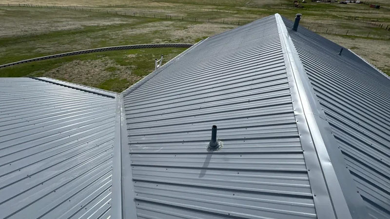
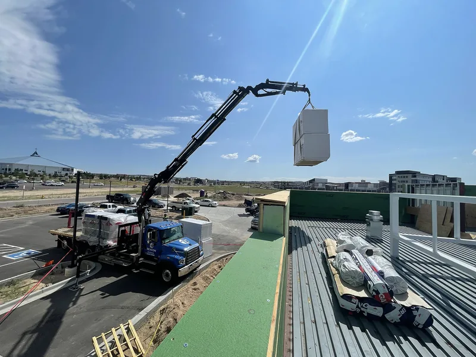
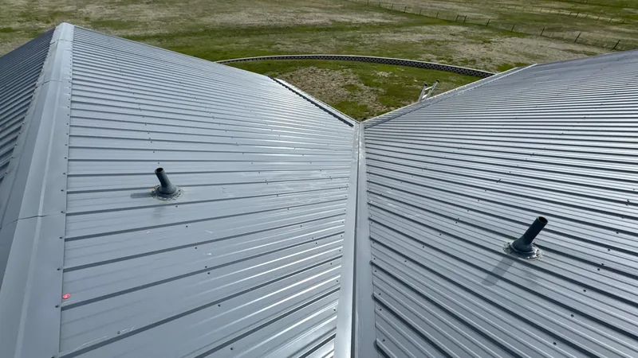

Yes, a metal roof can go over shingles in some cases, and the building code allows it. On a house you plan to keep, I'd still tear the old shingles off almost every time. The money you save skipping tear-off has a way of coming back later.
What the code says
UpCodes publishes Tennessee's residential code, built on the 2018 International Residential Code, and the reroofing part of Chapter 9 is short. You can read section R908 on UpCodes. In plain words, it says:
- A roof replacement means taking the old coverings off down to the deck.
- Putting a roof over the old one, which the code calls a recover, is allowed when the top roof goes on following its maker's instructions.
- A complete, separate system, like standing-seam metal that carries its load straight to the house's framing without leaning on the old roof, doesn't require the old coverings to come off.
- A recover isn't allowed if the old roof is water-soaked or worn to the point it can't serve as a base, or if there are already two or more layers of any kind of roofing up there.
Your local codes office decides which edition applies at your address, so ask before anyone orders panels.
So it can be legal. Legal and smart aren't always the same thing, and here's where going over shingles tends to go wrong.
You can't see the deck
The decking under your shingles is what holds everything up. If the roof has leaked, even a little, the plywood or boards under the wet spot may be soft or rotten. With a tear-off, you see each sheet, and the bad ones get replaced before anything goes back on. With a recover, that rot stays covered up and keeps going.
Metal panels screw down through the old shingles into that deck. A screw in soft wood doesn't hold like a screw in sound plywood, and a metal roof depends on its fasteners when the wind picks up.

Moisture has nowhere to go
Water that gets between metal panels and old shingles has a hard time drying out. A metal roof also has to be set up to handle condensation, usually with the right underlayment under the panels, and that's harder to do well over a lumpy old surface. In a humid place like East Tennessee, I'd want that layer done right, on a clean deck.
Old shingles aren't flat
Shingles curl, cup and lift as they age. Lay metal over that and the bumps can show through, especially on exposed-fastener panels. Panels want a flat, even base. A lumpy one can lead to oil-canning, the wavy look you sometimes see in the flat part of a panel, and to screws that don't seat evenly.
Weight adds up
A recover leaves the old shingles up there and adds the panels and fasteners on top. The rafters carry all of it for the rest of the roof's life. On sound framing one extra layer is often fine, but it's weight you didn't need to add, and a roof that already has two layers is off the table under the code section above.
Leaks get harder to find
With one layer, a leak usually shows up fairly close to where the water gets in. With two, water can run along the old shingles a long way before it finds a nail hole or a gap in the deck. The stain on your ceiling might be several feet from the real problem, and whoever traces it has to work through two roofs to find it.
Read the maker's instructions
Metal panel makers publish installation instructions, and the warranty on the panels can depend on following them. Some call for a solid deck and a specific underlayment. Ask for the instructions for the exact panel you're being sold, and read what they say about going over shingles. If the roofer can't show you, that tells you something.

When going over shingles is reasonable
There are times a recover makes sense:
- The old roof is a single layer, dry and sound, and a look in the attic shows no soft decking and no stains from past leaks.
- The system is standing seam on battens or purlins, strips of wood or metal fastened through to the rafters, that carry the panels and leave an air space above the old shingles.
- It's a barn or a shed, where the cost matters more than what's under the old roof.
Battens deserve a word. They give the panels something solid to fasten to and a gap for air to move, which helps with condensation. A batten system is also the kind of separate, self-supporting setup the code's exception describes. It still hides the deck, so I'd only use it on a roof where nobody has seen a leak.

What a tear-off buys you
A tear-off costs more and takes longer. For that you get each sheet of decking checked, fresh underlayment, flashing redone at the walls and chimney, and a flat base for the panels. What's under your shingles walks through those layers one at a time.
If you're still weighing metal against shingles in the first place, start with metal roof or shingles for an East Tennessee house and how long each kind of roof lasts. Our metal roofing page covers the panels we install.
Questions
Is putting metal over shingles cheaper?
Up front, yes, since there's no tear-off or disposal. Whether it's cheaper over the life of the roof depends on what's hiding under the old shingles.
Can metal go over two layers of shingles?
Generally no. The code section above rules out a recover where there are already two or more layers, so the old ones come off first. If someone tells you otherwise, ask your codes office.